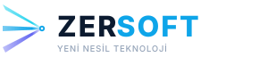
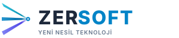

Marka adı yayıldı, slogan daraltıldı — her ikisi aynı görsel genişliğe zorlandı (textLength).

textLength="176" ile aynı genişliğe zorlandı. ZERSOFT yayıldı ↔ tagline daraldı. Tam hizalı tipografik blok.
Siyahın sertliğini kırıp daha zarif ve premium bir kurumsal duruş sağlayan koyu gri alternatifleri:

Açık Zemin — Koyu Antrasit Gri (#1e293b) ZERSOFT Tipografisi